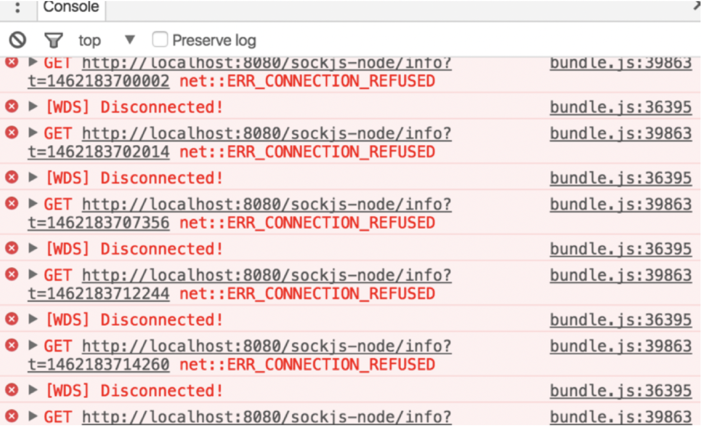
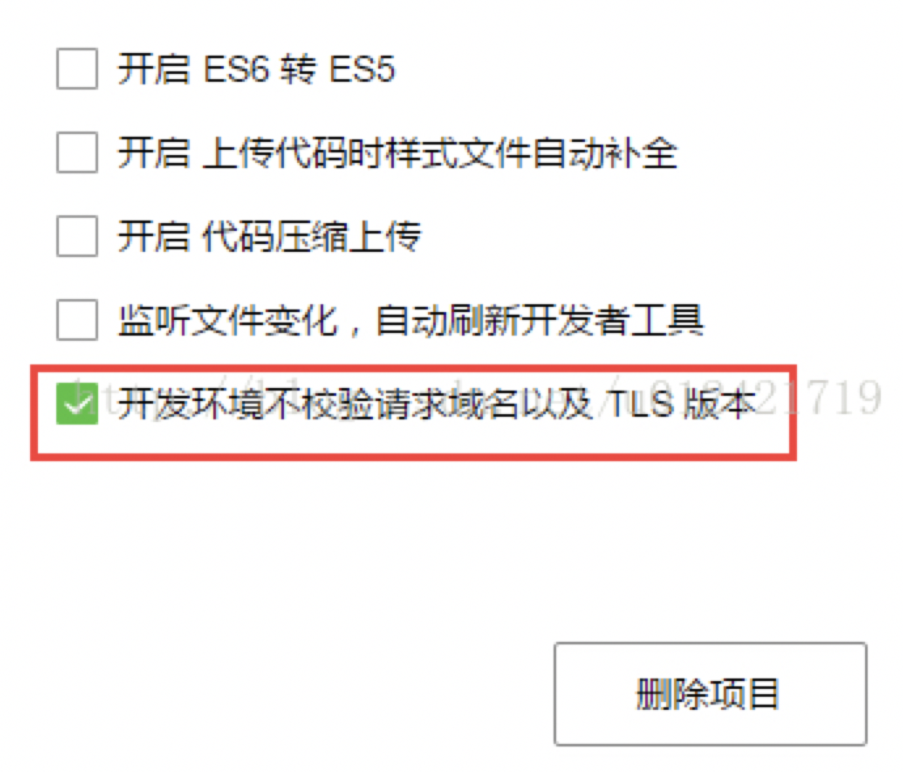
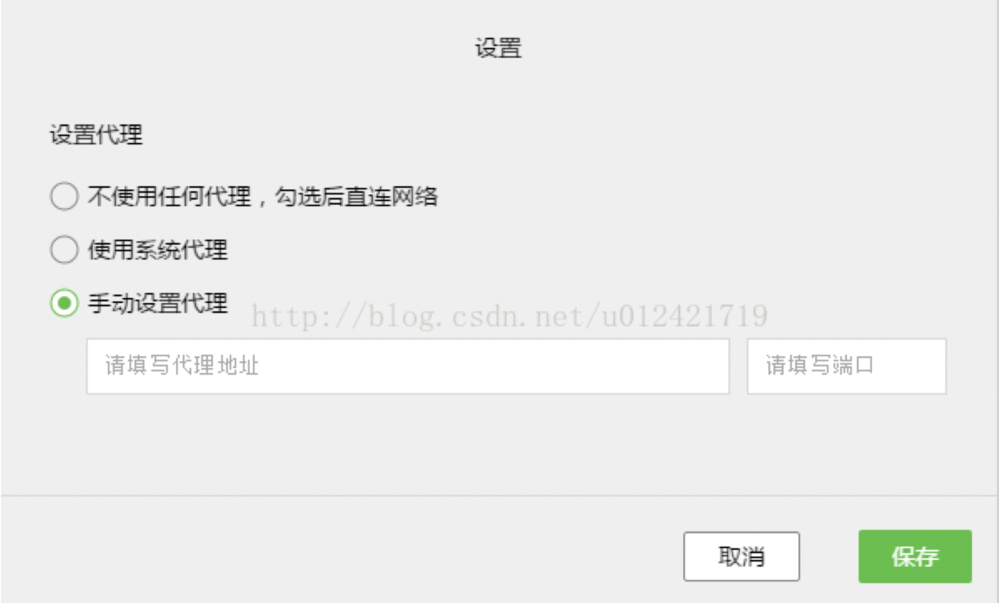

[toc]
目录
VUE报错
1. vue提示模板错误
==错误信息：==
You are using the runtime-only build of Vue where the template compiler is not available. Either pre-compile the templates into render functions, or use the compiler-included build.
原因： vue默认配置的是runtime版本。
不同构建版本的解释说明
在NPM包的 dist/ 目录下，你会找到许多不同构建版本的 Vue.js。以下是它们之间差异的概述：
| |UMD|CommonJS|ES Module
—|:–:|:–:|:–:
完整版本(Full)|vue.js|vue.common.js|vue.esm.js|
只含有运行时版本(Runtime-only)|vue.runtime.js| vue.runtime.common.js|vue.runtime.esm.js|
完整版本（生产环境）|vue.min.js|-|-|
只含有运行时版本（生产环境）|vue.runtime.min.js|-|-|
==解决办法：==
webpack.config.js 添加如下配置
vue-cli3.0后好像配置文件不叫webpack.config.js这个名字了
2
3
4
5
alias: {
vue: 'vue/dist/vue.js',
}
}
或者1
import Vue from 'vue/dist/vue.js';
或者
提取vue在html文件中直接引用(这种方法不推荐)1
<script src="https://unpkg.com/vue"></script>
webpack.config.js 添加如下配置:1
2
3externals: {
vue: 'Vue'
}
2. 在vue-cli里引入jQuery
1）安装jquery依赖1
npm install jquery –save
2）修改两处webpack配置 *注意vue-cli3.0以后不再有webpack.config.js这个文件，需要写在vue.config.js里1
2
3
4
5
6
7
8
9
10
11
12
13var webpack = require('webpack')//第一步，请求webpack
module.exports = {
lintOnSave: false,
configureWebpack: {
plugins: [
new webpack.ProvidePlugin({ //第二步，引入Jquery
$: 'jquery',
jQuery: 'jquery',
'window.jQuery':'jquery'
})
]
}
}
3）需要在那个页面用，直接引入即可1
import $ from ‘jquery’
3. vue监听window.onresize方法
1 | <template> |
4. Vue项目刷新当前页
NPM报错
1. code 128
解决办法：1
git config --global url."https://".insteadOf git://
2. code 13
解决办法：1
sudo xxx...
3. npm install 报错chromedriver 记录，错误信息如下：
1 | npm ERR! code ELIFECYCLE |
该问题是vue-cli脚手架的一个bug，解决办法：1
npm install chromedriver --chromedriver_cdnurl=http://cdn.npm.taobao.org/dist/chromedriver
JavaScript
1. 项目运行时一直发http://localhost:8080/sockjs-node/info?t=1462183700002请求
如图：

首先sockjs-node是一个JavaScript库，提供跨浏览器JavaScript的API，创建了一个低延迟，全双工的浏览器和web服务器之间通信通道。
如果你的项目没有用到sockjs,vuecli3 运行npm run serve 之后network里面一直调用一个接口:
http://localhost:8080/sockjs-node/info?t=1556418283950
方案：从根源上关闭此调用
1、node_modules/sockjs-client/dist/sockjs.js
2、代码的1605行注释
// self.xhr.send(payload);
ps:可在代码开发完成后关闭，会同步关闭热加载
git
1. 使用.gitkeep来追踪空的文件夹
解决办法：
Git会忽略空的文件夹。如果你想版本控制包括空文件夹，根据惯例会在空文件夹下放置.gitkeep文件。其实对文件名没有特定的要求。一旦一个空文件夹下有文件后，这个文件夹就会在版本控制范围内。
2. 当用git命令拉取最新代码时，有时会遇到如下的提示， Found a swap file by the name “.git/.MERGE_MSG.swp”
在项目根目录（如/StudioProjects/demo/Leave）下，找到.git/.MERGE_MSG.swp这个文件删除即可。 注：mac 删除命令rm -rf .MERGE_MSG.swp
小程序
1. ES6
使用es6可能导致安卓端真机调试时很多问题出现，还有其他未知问题；原因未知；
2. 字母拼错
包括字母拼写错误，大小写没有注意；微信小程序中，有大量这样的代码示例，从中间冒出一个大写，比如支付中的appId
3. 官方文档示例代码有误
有时官方文档示例代码也会出现问题，比如大小写出错，或者其他缺少参数等问题；
4. https
这个坑目前遇到的人最多，首先说明一下，工具的这个设置，

，这个设置有一些独特的作用，让你可以让本地避开一些限制；但是这个设置对真机无效，所以假如存在https问题，是否勾选并影响；仍然需要按贴排查：http://www.wxapp-union.com/forum.php?mod=viewthread&tid=648
5. 官方BUG
你遇到的问题可能是官方仍未解决的bug，具体可以参考官方文档
面向新手系列《四》官方文档BUG，tip及QA提示一览，以及最新的官方回答，目前有两个官方帮助，但是仅限于12月20号，更多更新，可以在本站搜索关键词“官方”或前往官方开发者社区查询；微信小程序官方帮助出来了，你最想吐槽的是什么坑？
官方问答精选系列《一》提交审核时提供测试账密码
6. 官方文档
官方文档是解决问题的不二之选，建议在解决问题时，不断的看官方文档，并且仔细看，尽量从官方文档中找出解决方案；
7. 调试工具
官方开发者工具及手机端，都提供了调试工具，基本跟原本大家常用的调试工具相差无几，可用利用调试工具多做各种调试，以免排查问题；调试方法，新手可以搜索网上相关firebug教程或浏览器调试教程或调试教程；
8. 重启大法
有时候编辑器会出现一些莫名其妙的BUG，比如昨天还是好的，今天打开各种问题等等，可以考虑重新编译或多次重启工具或重启电脑；
9. 新手跳坑
我们为新手准备了很多常见问题
10. 前人经验
有很多人遇到了很多问题，你可以在版块的问答分类下看看其他人遇到的问题及如此解决的
11. 无法登陆
参考@M-信念 同学的建议：可以稍微等等；当出现帐号登陆问题时，可以尝试使用他人微信号，或是咨询其他人是否也遇到了相同的情况，不要着急；
12. 代理设置
代理设置应该是一个隐藏比较深的坑，但是很多人被坑过，假如你的机器设置了代理，开发者工具可能会也跟着默认带来代理，然后会接踵而来很多登陆，空白等问题；

13. 使用搜索
现在本站聚合了大量的微信小程序相关内容，可以考虑使用本站的搜索，来获取自己想找的东西或用于解决问题，搜索时，请使用主要关键词，或相近关键词进行搜索，而不要直接搜索一句话，比如你需要appid，你可以搜索“appid”，你遇到了登陆问题，应该搜索“登陆”，真机预览遇到了问题，可以搜索“真机”，遇到了上传问题，可以搜索“uploadfile”
14. 微信版本问题
伴随微信的版本更新，不同的微信版本之间可能会出现不同的未知BUG；
15. 微信缓存
微信缓存会导致很多未知的bug，目前发现的有无法真机预览，以及跳出错误：需要清除应用缓存，或者使用第二部手机进行测试方可排除此问题；1
On PageReady can not find XXXXXX, app service not ready
16. 使用了非官方提供的方法
使用了部分非官方提供的方法比如Object.assign，可能会导致未知的问题，建议优先使用官方组件来实现；
MongoDB
1. 使用brew install mongodb安装mongodb时提示：No available formula with the name “mongodb”。。。因为MongoDB不再开源了！所以之前网上安装的方法都不对了！
官网解决步骤：1
2
3
4
5// 首先tap一个仓库
brew tap mongodb/brew
// 安装社区版（商业版没研究～）
brew install mongodb-community@4.2
// 后面的@4.2省略应该也行，默认安装最新版本（安装时最新4.2）
2. 关于/data/db
安装完MongoDB后，用mongod命令启动，此时会报错，因为没有数据库存放目录，必须创建一个。不知道为什么命令行一直失效，于是手动在/User/fu下面创建/data文件夹，再在其中创建/db文件夹，并用命令行启动MongoDB数据库1
sudo mongod --dbpath /Users/fu/data/db
注意一定要加sudo！否则启动会失败~
然后打开一个新的终端窗口，输入1
mongo
当看到“ > ”时，说明成功进入mongo的REPL环境(Read-Eval-Print-Loop，读一句、执行一句、显示一句)，此时便可以利用命令行进行数据库操作了